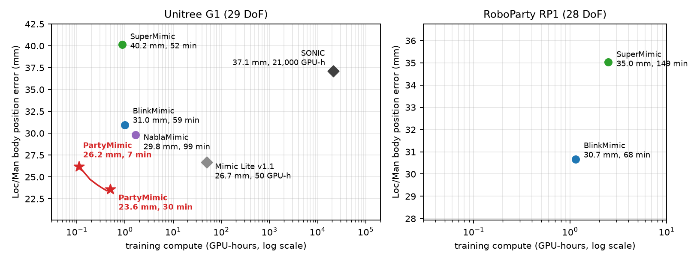
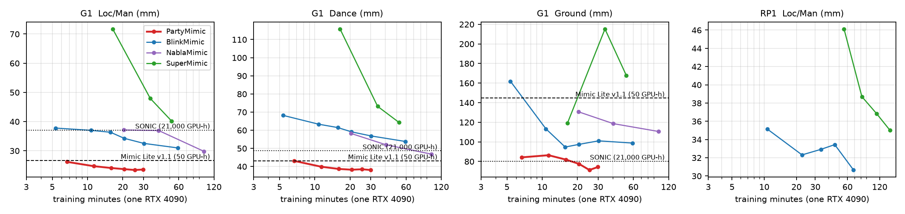

Results
PartyMimic is BlinkMimic's model-based learner (SuperMimic: an online MLP world model, 32-step BPTT through it, and a critic) with a recipe built for generalization and speed. All comparisons below are on held-out motions.
| Method | Training | Loc/Man | Loc | Man | Dance | Ground |
|---|---|---|---|---|---|---|
| Unitree G1 · body position error (mm, lower is better) | ||||||
| SONIC (NVIDIA GEAR, official) | 21,000 GPU-h | 37.1 | 28.7 | 45.5 | 48.7 | 80.3 |
| Mimic Lite v1.1 (official) | 50 GPU-h | 26.7 | 25.1 | 28.2 | 43.1 | 144.7 |
| SuperMimic (paper hyperparameters) | 52 min | 40.2 | 40.5 | 39.8 | 64.3 | 167.8 |
| NablaMimic (official config) | 99 min | 29.8 | 32.2 | 27.3 | 46.8 | 110.6 |
| BlinkMimic (main preset) | 59 min | 31.0 | 31.9 | 30.1 | 53.8 | 98.7 |
| PartyMimic, 2,000 iterations | 6.7 min | 26.2 | 29.3 | 23.1 | 43.1 | 84.2 |
| PartyMimic, 8,000 iterations | 21 min | 23.7 | 26.1 | 21.3 | 38.2 | 77.5 |
| PartyMimic, 12,000 iterations | 30 min | 23.6 | 25.5 | 21.6 | 38.1 | 74.3 |
| RoboParty RP1 · body position error (mm, lower is better) | ||||||
| SuperMimic (paper hyperparameters) | 149 min | 35.0 | 39.9 | 30.2 | 56.4 | 158.4 |
| BlinkMimic (main preset) | 68 min | 30.7 | 32.2 | 29.1 | 51.7 | 126.0 |
How these numbers were obtained. Every trained method (SuperMimic, NablaMimic, BlinkMimic, PartyMimic) was trained by us on the same machine. Each run had one NVIDIA RTX 4090 (48 GB) to itself, with an i9-14900K, CUDA 12.8 and PyTorch 2.9. All methods used the same 9,173-clip training set: 9,133 BONES-SEED clips retargeted to G1 plus LAFAN1, 21.1 h at 50 Hz. RP1 used the same motions retargeted to RP1. Training time is the wall-clock time of training on one GPU, excluding export and evaluation. All checkpoints were exported to ONNX and scored by the same evaluator: the sim2real leaderboard MuJoCo CPU sim2sim harness (seed 0, every clip played from start to end, failure when the pelvis height error exceeds 0.3 m or the gravity direction error exceeds 0.8). The test sets are the four MotionDecode splits: Loc-80, Man-48, Dance-40 and Ground-60. They come from a different motion-capture source with no overlap with the training data: no 1-s joint window of the 228 test clips lies within 0.059 rad RMS of any training window. The table reports the local body position error. Loc/Man is the mean of the Loc and Man errors. PartyMimic rows are 2-seed means; seeds differ by 0.1–1.4 mm on Loc/Man and by 5–13 mm on Ground. Completion rates are given in the next table. SONIC and Mimic Lite v1.1 are the official leaderboard entries: different data and hardware, so their GPU-hours only indicate scale. They have no RP1 entries, and NablaMimic has no RP1 model.
Completion (% of each clip tracked before a failure)
| Method | G1 Loc / Man | G1 Dance | G1 Ground | RP1 Loc / Man | RP1 Dance | RP1 Ground |
|---|---|---|---|---|---|---|
| SONIC | 100 / 100 | 98.9 | 86.3 | – | – | – |
| Mimic Lite v1.1 | 99.3 / 93.6 | 55.8 | 65.5 | – | – | – |
| SuperMimic | 100 / 100 | 98.0 | 80.0 | 99.4 / 100 | 98.1 | 80.5 |
| NablaMimic | 99.3 / 100 | 87.4 | 82.3 | – | – | – |
| BlinkMimic | 100 / 100 | 96.7 | 88.0 | 100 / 100 | 93.8 | 87.8 |
| PartyMimic, 12,000 iterations | 99.8 / 98.7 | 95.9 | 93.4 |

Sim2sim on held-out motions
Rollouts from the leaderboard evaluator (MuJoCo, deterministic policy) on the four held-out splits. For each split we show the clip with the median error, so these clips are typical rather than the best ones. The robot is drawn solid and the reference motion as a translucent blue ghost. Both are drawn at their global poses in one scene, so drift of the root shows as a gap between them. The overlay gives the mean global body position gap. Policies: G1 seed 0 and RP1 seed 0 at 12,000 iterations.
Recipe and what matters most
PartyMimic trains with BPTT: the policy gradient is the derivative of an analytic tracking reward, back-propagated
through 32 imagined steps of a learned world model and closed by the critic's value gradient
∇sV at the horizon. Every factor below changes either the direction or the noise of
that gradient.
The table lists factors from largest to smallest effect. Each effect is the change when the factor is removed,
compared at the same iteration (G1, held-out Loc/Man error unless stated).
The defaults of python -m partymimic.train are exactly this recipe.
| Factor | PartyMimic setting | Effect when removed | Why it matters this much |
|---|---|---|---|
| Muon optimizer | --pi_opt muon --wm_opt muon | Adam: +10.7 mm (Dance +25 mm) |
The training set is 65% standing / in-place motion and 6% ground motion. The ground-motion gradient is nearly orthogonal to the rest (cosine 0.02–0.15), so the summed gradient points almost entirely at the majority. Muon orthogonalizes each update, so minority directions get 2–4× the relative step they get with SGD or Adam. |
| Narrow tracking-reward kernels | --std_scale 0.35 | ×1 widths: +6.5 mm (Dance +10.8 mm) |
BPTT follows ∂r/∂e = (2e/σ²)·e−e²/σ², which peaks at e = σ/√2. The default body kernel (σ = 0.3 m) peaks at 21 cm. A trained policy is at 2–3 cm, where that gradient is almost zero. At 0.35× the gradient at 3 cm is 7.6× larger. PPO only sees reward values; BPTT sees their slope. The same change also improves NablaMimic by 5.8 mm. |
| Imagination horizon 32 | --horizon 32 | 16 steps: +5.9 mm (Dance +12.5 mm) |
Fewer model steps leave more of the gradient to ∇sV. The critic is fit to values, not slopes: its state gradient has cosine 0.35 to the true return gradient. |
| Reference-action skip | --pi_ref_skip | +5.6 mm | The network outputs a residual around the next reference joint pose, so the gradient refines tracking instead of having to rebuild the pose. |
| Policy EMA 0.995 | --pi_ema 0.995 | +3.4 mm | The policy gradient's critical batch (700–4,900) is close to the batch (2,048), so single updates are noisy. Deploying the weight average removes that noise. |
| Collision model of the evaluator | --robot g1mj (capsules, self-collision) | LAFAN-40 falls 14/40 instead of 3/40 | BPTT follows the world model's Jacobian, and the model learns whatever contacts the training simulator has (arms passing through the torso, 4-sphere feet). The policy then exploits those contacts and fails under the evaluator's. |
| Value-gradient consistency | --v_gcons 0.5 | +1.0 mm (better in 22 of 22 seed pairs) | ∇sV is the noisiest term of the policy gradient (removing γHV raises SNR 10–20×, but makes the policy short-sighted). The backward pass already computes the true return gradient ∇SkGk at every imagined state. Fitting ∇sV to it raises the cosine from 0.35 to 0.6, at +10% time per iteration. |
| Muon on every policy layer | --pi_muon_io | +1.2–1.6 mm (Dance +4 mm) |
Same reason as Muon. With Adam on the input layer, the features that separate rare motions get majority-dominated updates. Costs +0.5% time. |
| Diversity-balanced resets | --div_k 24 --div_tau 0 | Ground +6–19 mm, −4–8 pts completion | The uniform half of the reset distribution gives equal mass to 24 k-means clusters of motion features instead of being proportional to duration. Ground and transition motions rise from 8% to 30% of resets, at no cost. |
| Self-imitation | --sil 1 | +0.5–0.7 mm early, neutral late | Early in training the world model and critic are inaccurate. Actions that really did better than V(s) in the simulator still give an unbiased improvement direction (advantage-weighted regression on replay). |
| Removed: evaluation-probe resets | off (BlinkMimic main: on) | same accuracy, 2.1× faster | These resets mine failures on the training clips. That is cheap and on-target for 40 LAFAN clips. On 9k clips the sweeps take half the training time and do not help held-out motions. |
Effects of the top five factors come from single-factor ablations at 6,000–12,000 iterations; the significance threshold is 2 mm, given seed noise of 0.1–1.4 mm on Loc/Man. The last four come from seed-paired comparisons on two machines. Changes that did not help include critic ensembles, smoothing V, wider or mixed reward kernels, more simulator data, larger or wider world models, horizon 48, and action-gradient clipping.
Why SuperMimic works: full-factor ablation
Stage 1 of the study ablated SuperMimic itself, factor by factor, on our reimplementation (LAFAN-40, G1, 6,000 iterations per variant, one variant per factor). The score is the normalized evaluation return (mean of the last two evaluations, deterministic policy). The baseline over 3 seeds is 0.686 ± 0.048, and single-seed |z| < 1.5 counts as noise. Δ is the change from the baseline.
| Variant | What it tests | Score | Δ | Verdict |
|---|---|---|---|---|
| Baseline (3 seeds) | ||||
base_s0 seed 0 | seed noise | 0.719 | +0.038 | |
base_s1 seed 1 | seed noise | 0.658 | -0.023 | |
base_s2 seed 2 | seed noise | 0.650 | -0.023 | |
| World model | ||||
k1 WM rollout loss window 8 → 1 | multi-step autoregressive vs one-step model loss | 0.656 | -0.017 | no clear effect |
k16 WM rollout loss window 8 → 16 | longer autoregressive window | 0.619 | -0.054 | worse (trend) |
wmworld invariant increments → raw world-frame state deltas | naive MBRL parameterization (no translation / yaw invariance) | 0.621 | -0.052 | worse (trend) |
noerrfloor no error floor in the WM loss | near-constant components dominating a std-normalized loss | 0.666 | -0.006 | no clear effect |
wm512 WM width 2048 → 512 | world-model capacity | 0.535 | -0.138 | worse |
wmonly0 WM-only warm-up 500 → 0 iterations | need for a model-only phase | 0.692 | +0.019 | no clear effect |
wmb2 WM batches per iteration 10 → 2 | amount of world-model fitting | 0.520 | -0.153 | worse |
wmb20 WM batches per iteration 10 → 20 | more world-model fitting | 0.721 | +0.048 | better (trend) |
wm4l WM 3 → 4 layers | more world-model capacity | 0.696 | +0.024 | no clear effect |
| Policy optimization | ||||
nocritic no critic bootstrap | role of the critic at H = 32 | 0.428 | -0.253 | worse |
h8 horizon 32 → 8 | short horizon (bias from the critic) | 0.430 | -0.250 | worse |
h64 horizon 32 → 64 | long horizon (gradient variance / explosion) | 0.661 | -0.012 | no clear effect |
noclip no gradient clipping | is clipping needed | 0.692 | +0.020 | no clear effect |
noclipv no element-wise 0.1 clip | does the element-wise clip act | 0.663 | -0.010 | no clear effect |
beta999 Adam β2 0.95 → 0.999 | second-moment adaptation speed | 0.708 | +0.035 | no clear effect |
out1 output-layer init 0.01 → 1 (3 seeds) | small init (initial action ≈ default pose) | 0.713 | +0.040 | better (trend) |
ln LayerNorm in the actor | does LN slow learning | 0.604 | -0.069 | worse (trend) |
floor4 input-normalizer floor 1e-2 → 1e-4 | normalizer floor | 0.670 | -0.003 | no clear effect |
survhard soft survival weight → hard termination | differentiable termination probability | 0.672 | -0.000 | no clear effect |
survnone no survival weight | role of the termination signal | 0.648 | -0.025 | no clear effect |
noimagnoise no sensor noise in imagination | noise as regularizer / deployment consistency | 0.674 | +0.002 | no clear effect |
nocerr critic without tracking-error inputs | critic features | 0.677 | +0.004 | no clear effect |
vclip critic output clipped to ±10 | community fix against value divergence | 0.703 | +0.031 | no clear effect |
lr1e4 lr 2e-4 → 1e-4 | learning rate | 0.591 | -0.081 | worse |
lr4e4 lr 2e-4 → 4e-4 (3 seeds) | learning rate (community choice) | 0.726 | +0.054 | better (trend) |
lr6e4 lr 2e-4 → 6e-4 (3 seeds) | learning rate | 0.750 | +0.077 | better |
ema policy EMA 0.995 (3 seeds) | weight averaging (community) | 0.761 | +0.089 | better |
lam0 critic target λ 0.95 → 0 | bias / variance of the critic target | 0.628 | -0.045 | worse (trend) |
lam1 critic target λ 0.95 → 1 | bias / variance of the critic target | 0.701 | +0.028 | no clear effect |
gamma097 discount γ 0.99 → 0.97 | effective horizon and value scale | 0.624 | -0.048 | worse (trend) |
cep1 critic epochs 5 → 1 | critic fitting strength | 0.652 | -0.021 | no clear effect |
h16 horizon 32 → 16 | horizon curve | 0.596 | -0.077 | worse |
h48 horizon 32 → 48 | longer gradient chain | 0.702 | +0.029 | no clear effect |
emalr6 EMA 0.995 + lr 6e-4 | EMA × higher learning rate | 0.825 | +0.153 | better |
emalr8 EMA 0.995 + lr 8e-4 | EMA × higher learning rate | 0.816 | +0.143 | better |
| Data and curriculum | ||||
noise0 action noise 0.1 → 0 | identifiability of ∂f/∂a | 0.692 | +0.020 | no clear effect |
noise03 action noise 0.1 → 0.3 | wider action coverage | 0.696 | +0.023 | no clear effect |
clean50 half the worlds collect without noise | covariate shift (community) | 0.707 | +0.034 | no clear effect |
uniform return-based reset sampling → uniform | adaptive curriculum | 0.657 | -0.016 | no clear effect |
noepcap no 500-step episode cap | episode length | 0.643 | -0.029 | no clear effect |
utd1 UTD 0.4 → 1.0 | less fresh data | 0.669 | -0.004 | no clear effect |
utd02 UTD 0.4 → 0.2 | more fresh data | 0.660 | -0.013 | no clear effect |
buf100 replay 1000 → 100 steps | freshness vs diversity | 0.656 | -0.016 | no clear effect |
| Observation interface | ||||
paperobs no reference-anchor relative orientation | paper observation (strongest community factor) | 0.484 | -0.188 | worse |
noselfcol self-collision off (3 seeds) | contact complexity (falls 33/40 on the leaderboard evaluator) | 0.739 | +0.067 | better |
vibed supermimic_vibed interface (3 seeds) | pelvis anchor + reference goal + relative obs + no self-collision | 0.749 | +0.076 | better |
| Gradient paths and mechanism | ||||
gwin8 H = 32, gradient cut every 8 steps | critic share vs gradient-chain length | 0.525 | -0.147 | worse |
onestep one-step model gradient only | multi-step Jacobian propagation | 0.002 | -0.670 | worse |
noobsgrad no gradient through the observation feedback | closed-loop (corrective) gradient | 0.517 | -0.156 | worse |
wmfreeze freeze the WM after 1000 iterations | on-policy refitting / model exploitation | 0.004 | -0.668 | worse |
noxi WM and critic without ξ | deterministic model conditioned on known randomness | 0.695 | +0.023 | no clear effect |
curstart imagine only from the 10 newest steps | diversity of the Dyna start states | 0.640 | -0.032 | no clear effect |
gwin1boot gradient cut every step, V at every step | long chain vs ∇V at the cut (SVG(1)-style) | 0.001 | -0.671 | worse |
gwin8boot gradient cut every 8 steps, V at the cuts | same, SHAC-style | 0.416 | -0.256 | worse |
vstopgrad no state gradient through the terminal V | does the policy use ∇V | 0.543 | -0.130 | worse |
wmfreeze4k freeze the WM after 4000 iterations | is refitting needed once the model is good | 0.507 | -0.166 | worse |
| Stage-2 additions | ||||
medclip per-sample action gradient ≤ 3 × median | heavy-tailed contact gradients (NablaMimic) | 0.613 | -0.060 | worse (trend) |
piup2 2 policy updates per iteration | updates vs wall-clock | 0.723 | +0.050 | better (trend) |
piup4 4 policy updates per iteration | updates vs wall-clock (2.2× slower per iteration) | 0.781 | +0.109 | better |
Conclusions: what dominates and why
- The multi-step gradient through an online-refit world model is the method.
Keeping only the one-step model gradient (
onestep,gwin1boot) gives a score of 0.00, and so does freezing the world model after 1,000 iterations (wmfreeze). With only one model step the policy follows the critic's ∇sV, which nothing supervises. A frozen model is exploited as soon as the policy leaves the region where it is accurate. - The horizon and the critic split the work. Without the critic (0.43), with H = 8 (0.43) or with
H = 16 (0.60), results are clearly worse, while H = 48 or 64 brings no gain. Short chains rely on the
inaccurate ∇sV; longer chains only add variance. The terminal ∇V still matters
(
vstopgrad0.54), but as a tail correction rather than the main signal. - The closed-loop observation path carries most of the useful gradient
(
noobsgrad0.52,gwin80.53). The gradient of how the next observation, and hence the next correction, depends on the state is what teaches feedback control. - Model error becomes gradient error. A smaller world model (
wm5120.54) or less model fitting (wmb20.52) hurts directly; more fitting (wmb20) helps only slightly. - The observation needs the reference relative to the robot (
paperobs0.48). Over long clips, yaw drift is otherwise unobservable. - Optimization knobs: policy EMA (+0.09, 3 seeds) and a 2–3× higher learning rate help, and
combined they give the best result (
emalr60.83). These carry over to PartyMimic. Everything else (λ, critic epochs, action noise, UTD, replay size, reset distribution, survival weighting) is within noise. - Caveat: turning off self-collision scores better here (+0.07, 3 seeds), but 33 of 40 LAFAN clips then fall on the leaderboard evaluator. Any factor that changes the simulator must be re-checked under the deployment evaluator. This is why PartyMimic trains on the evaluator's collision model.
Use it
Code, data format, training, export and evaluation instructions are in the
README. One command trains the recipe:
bash scripts/train.sh logs/g1 --robot g1mj --motion_dir <npz clips>.